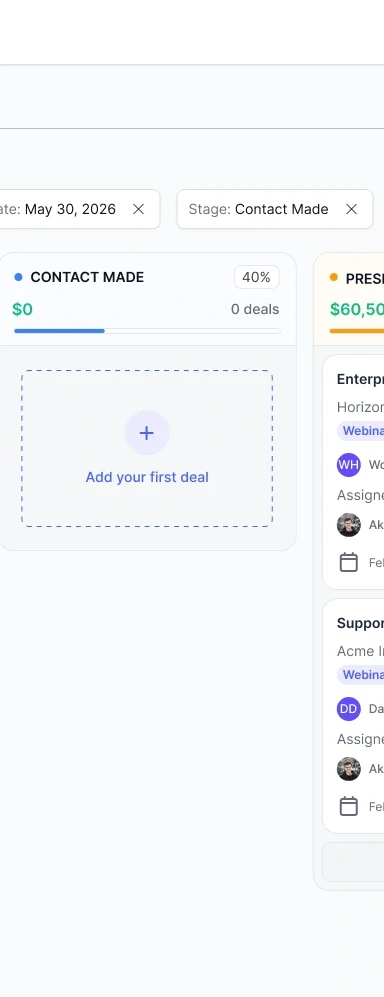

The record is only
the beginning.
A CRM needs to help people interpret a relationship, not simply store it.
My challenge was to connect overview-level work—scanning leads, reviewing a pipeline, and planning tasks—with the details of an individual customer. I used a consistent structure for moving from a collection to a record and then to the next action.
How do I make dense customer information feel actionable?
Give different information different jobs: identification, history, progress, and follow-up.
Understand the work
behind the data.
Start with the decisions people need to make.
The interface centers on three practical questions: which relationship needs attention, what has happened so far, and what should happen next. These questions connect the collection view, customer timeline, and follow-up actions into one coherent experience.
Workflow questions the design addresses
The list supports prioritization, the timeline provides context, and related actions turn that context into the next step.
One relationship.
Three layers of context.
Who this person is, who owns the relationship, and where it came from.
What happened across emails, calls, notes, and updates.
Deals, tasks, and events connected to the record.
I gave the activity timeline the largest region because it carries the evolving relationship. Stable profile information sits to the left; related work sits to the right. This separates reading history from deciding what to do next.
Different views.
Different decisions.
Table for comparison
I used aligned columns for lead identity, ownership, and status. This supports scanning across records; search and filtering stay above the collection.
Board for progression
Deals are grouped by stage, making progress spatial. Cards repeat the same information pattern so the pipeline remains readable as opportunities accumulate.
Tasks for commitment
A dedicated task workspace supports planning across customers. Record-level tasks preserve the link between follow-up and the relationship.
Density versus confidence.
Compact tables support comparison but demand consistent alignment and clear states. The design uses neutral surfaces, restrained status color, and record detail pages to manage that tension.
The visual system:
quiet, precise, repeatable.
Deep aubergine establishes the navigation shell. Violet carries interactive emphasis, while white cards and pale canvas tones support dense customer information.
Neutral sans-serif typography
Exact family requires the source design file.
Palette values are sampled or visually approximated from screenshots. Typography and component specimens reconstruct the visible system; they are not an export of the original Figma tokens.
Cards as units of work.
Pipeline cards use a repeated anatomy so each opportunity can be recognized within a larger board. Column grouping carries the workflow stage; the card carries the individual deal.

From scattered details
to a working picture.
What the design delivers
A shared customer model connects lead lists, activity timelines, pipeline stages, and follow-up tasks. The selected screens show how those relationships are expressed through navigation and layout.
How the design supports the work
Consistent record layouts establish a predictable reading order. Related tasks and opportunities stay beside customer history, and list-level actions support work across multiple records. These decisions make the next step visible without requiring every detail to compete at once.
The design connects three levels of work: finding a record, understanding the relationship, and deciding what to do next. Contextual actions keep notes, deals, and follow-up close to the customer, while dedicated workspaces support planning across the wider pipeline.
From a name in a list
to a meaningful next step.
The lead detail is the point where identity, communication history, and related work meet. From there, the user can add context, create an opportunity, or plan a follow-up task.
Workflow reconstructed from the supplied interface screens. Branches describe available task routes, rather than a mandatory sequence.
The lead header and related-work panels expose common actions without losing the customer’s identity.
The task form includes record association, an assignee, a due date, and priority—turning an intention into defined work.